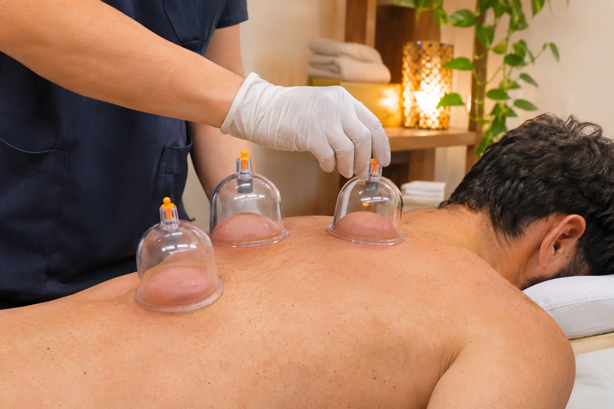

الرقية الشرعية
- الرقية بالقرآن الكريم والسنة النبوية
- الاستماع للحالة وتقديم الإرشاد الشرعي
- الرقية المتعلقة بالعين والحسد
- الرقية الشرعية للبيت والأسرة
- استشارة ومتابعة حسب الحالة
المعالج السوسي جلال
الرقية الشرعية ◆ الحجامة ◆ الكيروبراكتيك
والمنتجات العلاجية الطبيعية
